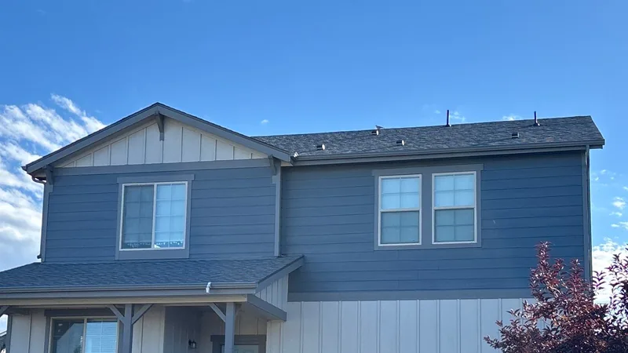
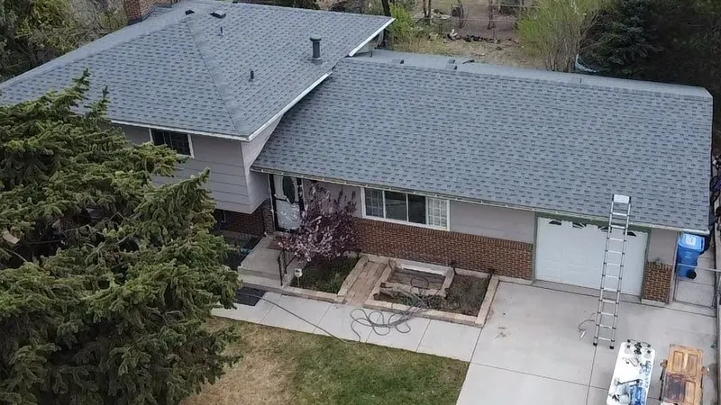

Morristown, TN
Morristown roofing company
Morristown grew up around rail lines and factory floors, then spread toward Cherokee Lake. That leaves a city of old downtown blocks, mill-era houses and lakeside homes, each with its own kind of roof trouble.

- Family roofing company. Since 2018.
- 4,000+ projects documented. On record, job by job.
- Free inspections. Written, line-by-line prices.
- 24-hour emergency line. Leaks and storm damage, any hour.
- All of East Tennessee. Twelve counties, one phone number.
Morristown at a glance
- County seat of Hamblen County, with 30,431 people at the 2020 census (Wikipedia).
- Incorporated in 1855. The East Tennessee and Virginia Railroad reached town in 1858.
- Downtown's Skymart, an overhead sidewalk along Main Street, was finished in 1967, the first second-story sidewalk system in an American city.
Source: Wikipedia, Morristown, unless noted.
Under the Skymart
Main Street's raised walkway was built after Turkey Creek flooded the downtown blocks in 1962 (Wikipedia). It still stands, and the brick buildings it ties together carry flat and low-slope roofs hidden behind parapet walls.
On a roof like that, water drains to a scupper or an inside drain, and one clogged outlet can pond an inch of rain over the whole deck. If you own a downtown building, look at the drains each fall. Check where the walkway meets your wall too, since that seam is a second roof edge most owners forget. Low-slope work is its own trade: see commercial roofing.

Houses from the factory years
For two or three generations Morristown was known as a furniture town, and the last major furniture maker cut 602 jobs when it closed. The houses built for those workers still line the streets around downtown. Many are modest frame or brick homes from the early and middle 1900s, often with a second roof laid over the first and a porch roof pitched lower than the main one.
That low porch slope is where we usually find the leak. Tear-off on these houses tends to turn up plank decking, and any board gone soft under the old layers gets replaced before anything else goes down.
Wind across Cherokee Lake
Cherokee Lake covers about 28,780 acres with nearly 400 miles of shoreline (Wikipedia), and a long stretch of it lies on Morristown's north side. A storm crossing that much open water reaches the first row of houses with nothing in the way. On a lake house, ridge caps and the shingles along the gable rakes go first. When those get replaced, ask for a shingle line rated for high wind, starter strip at the rakes, and the number of nails in each shingle.

Inside the city, the city's office
Morristown runs its own Building Inspections department. Its work, per the City of Morristown, is plan review, issuing building permits and inspecting construction inside the city. Outside city limits, Hamblen County's codes and regulations apply instead (Hamblen County).
Morristown is the county's only incorporated city, so the line is simple: a city address goes to the city office, and everything else in the county goes to the county. We check which one covers your house and pull whatever it requires.
Common questions
Does a Morristown re-roof need a city permit?
Inside city limits, permits come from the city's Building Inspections department. Whether your job needs one depends on its scope, so we ask the department before we price it. If it does, the fee shows as its own line and the permit is pulled before work starts.
My house is on the lake outside town. Who covers it?
Hamblen County, not the city. The county has adopted the 2018 international building codes, and its planning office handles the paperwork. We confirm your address with them and take care of what they ask for.
Can I just text you a photo?
Please do. Text a photo of the problem (the ceiling stain, the shingles in your yard, the spot you can see from the street) to (865) 830-8126 with your address. We'll text back what it looks like and whether someone needs to come out. It's the fastest way to find out if a problem is small.
Can you fix a leak instead of replacing the whole roof?
Usually, yes. Most leaks start at a handful of spots: cracked pipe boots, flashing at a wall or chimney, a few wind-lifted shingles, or a skylight. Each can usually be fixed on its own, and if a repair will stop the leak, that's what we quote. We'll also tell you when patching has become throwing money away.
Get a free look at your Morristown roof
Four boxes. We'll call you back to pick a time.
Rather talk? Call (865) 830-8126. Rather text? Send a photo.